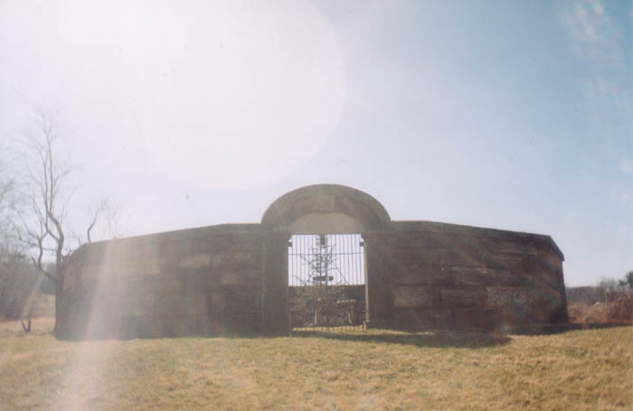
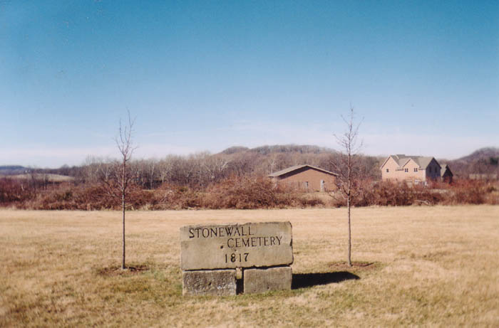
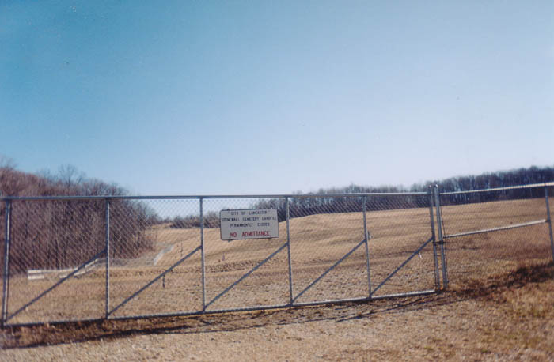
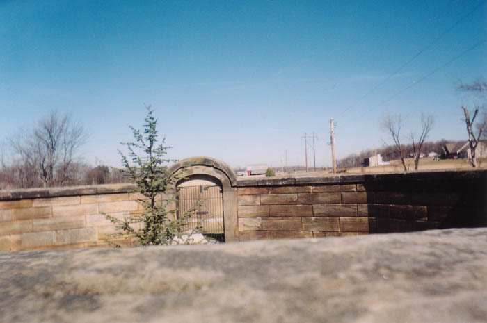
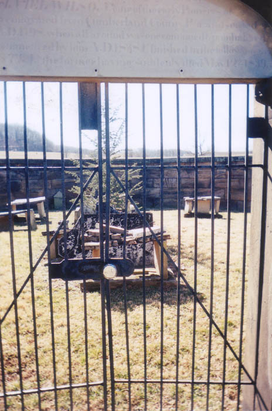
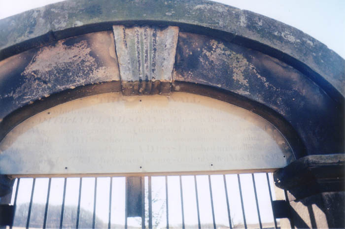

Stone Wall Cemetery

One of the most unusual cemeteries you'll find anywhere is Lancaster's Stone Wall Cemetery, which is located off Route 22 west of town, near the intersection of Stone Wall and Cemetery Roads. This old family plot is completely enclosed by a sturdy stone wall with a locked gate.

A lot of cemeteries have official names that no one remembers. This one was originally the Wilson family cemetery, but it's been Stone Wall long enough to have a new sign put up and influence not only the names of the roads nearby, but also the adjacent Stone Wall Cemetery Landfill.

Predictably, Stone Wall Cemetery is said to be haunted. The story goes that if you climb to the top of the wall at night and walk around it thirteen times, the dead people inside will pull you in. I'll definitely have to try it out sometime.

As you can see, the grass and weeds grow wild inside the stone wall. It can't be easy to mow in there. There are also numerous gravestones, presumably belonging to the Wilsons.

For a clue about the history of the cemetery, the plaque above the gate is a good place to look. Since it's hard to read in the picture above, I'll tell you what it says:
THIS WALL
which encloses the family burying ground of
NATHANIEL WILSON (one of the early Pioneers of
the West) who emigrated from Cumberland County Pa and settled near this place
AD 1798, when all around was one continued and uninhabited
wilderness, was commenced by him AD 1838 & finished in the following year
by his son GUSTIN, the former having suddenly died May 12, 1839.

The historical marker nearby states that Nathaniel Wilson III willed the cemetery on October 24th, 1817 to President James Monroe and all future presidents. So Barack Obama is the current owner of the place; if you want permission to explore it you might want to call and ask him, or maybe Michelle. Nathaniel Wilson, Jr. died before his son Gustin finished construction on the wall. He also left a nearby tract of land to President Martin Van Buren in 1838; the land was set aside for growing locust posts to keep the cemetery fenced, presumably before the wall was completed.
I believe the area around Stone Wall Cemetery is a city park, so it's not hard to visit the place. The wall is about six feet tall and pretty easy to climb, so try the ghost test sometime. But don't blame me if you get pulled in and taken to hell.
Surprisingly, it turns out there's more than one "stone wall" cemetery in Lancaster. For more information about this one or the others, try one of these links:
Stone Wall Cemetery #2
Grave Addiction: Stone Wall Cemetery
Lost Southeast Ohio: Stone Wall Cemetery
Historicalparks.org: Stone Wall Cemetery
Lancaster's Attic: Fairfield County's Stonewalled Cemeteries
Back
Sources
Goslin, Charles R. Crossroads and Fence Corners: Historical Lore of Fairfield County. Lancaster: Fairfield County Heritage Association, 1976.{kind=link}
{kind=link}
{kind=link}
{kind=link}
{kind=link}
{kind=link}